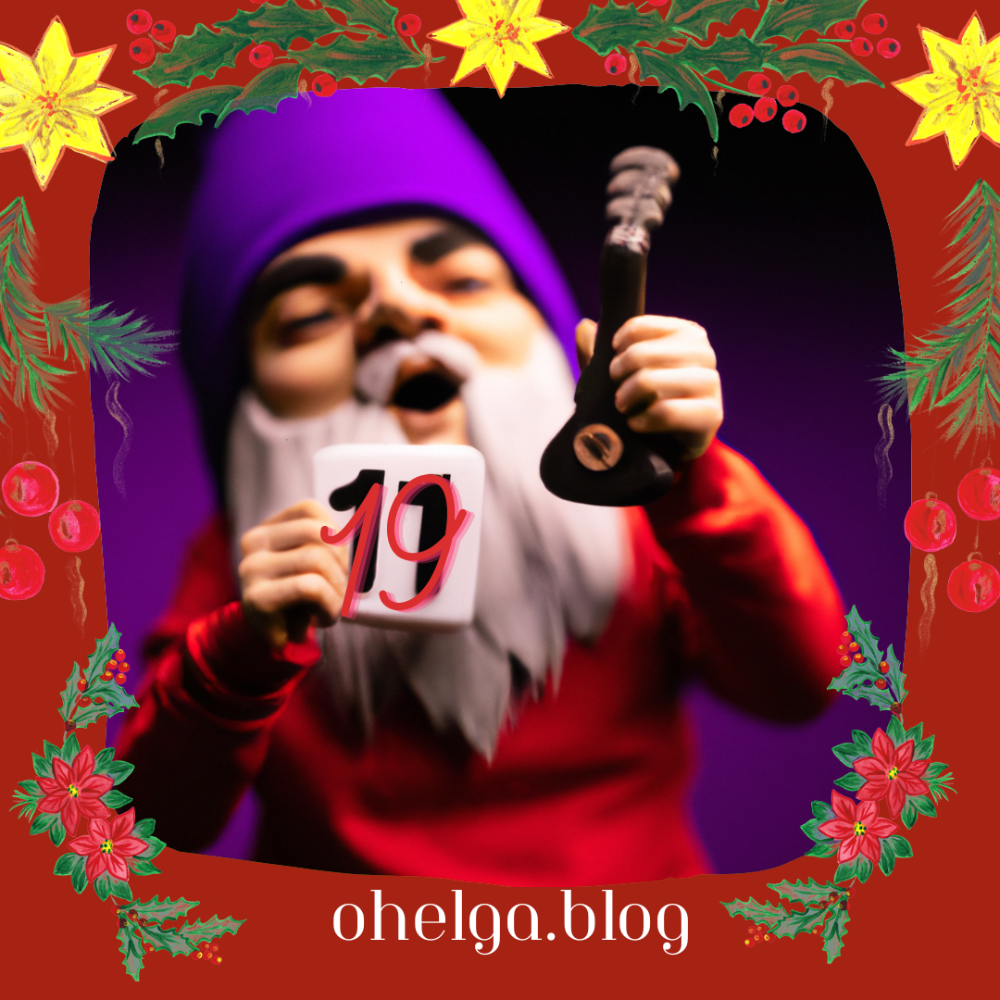

En version av en artist som gör musik “för den som vill dansa och skrikgråta”. Taiteilija kuuluu uuteen sukupolveen ja on saanut räjähdysmäisen uran TikTokissa. Mutta onnistuuko hän vangitsemaan huomiomme muutamassa sekunnissa vai selatemmeko eteenpäin? I dagens lucka: Dani Sylvia: O Holy Night.
En version av en artist som gör musik “för den som vill dansa och skrikgråta”. Taiteilija kuuluu uuteen sukupolveen ja on saanut räjähdysmäisen uran TikTokissa. Mutta onnistuuko hän vangitsemaan huomiomme muutamassa sekunnissa vai selatemmeko eteenpäin? I dagens lucka: Dani Sylvia: O Holy Night.
Kommentit / Kommentarer (1)
<p>I'm excited to see how this artist brings a new energy and perspective to the classic song.</p>